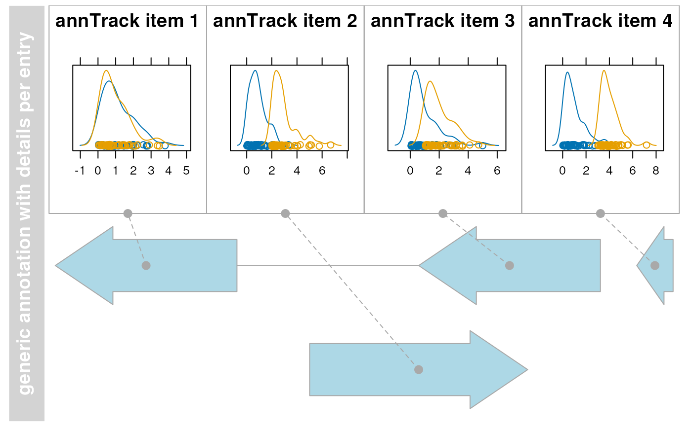

AnnotationTrack class and methods
AnnotationTrack-class.RdA fairly generic track object for arbitrary genomic range annotations,
with the option of grouped track items. The extended
DetailsAnnotationTrack provides a more flexible interface to
add user-defined custom information for each range.
AnnotationTrack(range=NULL, start=NULL, end=NULL, width=NULL, feature, group, id, strand, chromosome, genome, stacking="squish", name="AnnotationTrack", fun, selectFun, importFunction, stream=FALSE, ...)
Arguments
| range |
An optional meta argument to handle the different input types. If
the The different input options for
|
|---|---|
| start, end, width | Integer vectors, giving the start and the end end coordinates for the individual track items, or their width. Two of the three need to be specified, and have to be of equal length or of length one, in which case this single value will be recycled. Otherwise, the usual R recycling rules for vectors do not apply here. |
| feature | Factor (or other vector that can be coerced into one),
giving the feature types for the individual track items. When
plotting the track to the device, if a display parameter with the
same name as the value of |
| group | Factor (or other vector that can be coerced into one),
giving the group memberships for the individual track items. When
plotting to the device, all items in the same group will be
connected. See |
| id | Character vector of track item identifiers. When plotting to
the device, it's value will be used as the identifier tag if the
display parameter |
| strand | Character vector, the strand information for the
individual track items. It may be provided in the form |
| chromosome | The chromosome on which the track's genomic ranges
are defined. A valid UCSC chromosome identifier if
|
| genome | The genome on which the track's ranges are
defined. Usually this is a valid UCSC genome identifier, however
this is not being formally checked at this point. If not provided
here the constructor will try to extract this information from the
provided input, and eventually will fall back to the default value
of |
| stacking | The stacking type for overlapping items of the
track. One in |
| name | Character scalar of the track's name used in the title panel when plotting. |
| fun | A function that is being called
for each entry in the
Additional arguments can be passed to the plotting function by means
of the |
| selectFun | A function that is being called
for each entry in the |
| importFunction | A user-defined function to be used to import the
data from a file. This only applies when the |
| stream | A logical flag indicating that the user-provided import
function can deal with indexed files and knows how to process the
additional |
| ... | Additional items which will all be interpreted as further
display parameters. See |
Objects from the class
Objects can be created using the constructor function
AnnotationTrack.
Value
The return value of the constructor function is a new object of class
AnnotationTrack or of class DetailsAnnotationTrack,
depending on the constructor arguments. Typically the user will not
have to be troubled with this distinction and can rely on the
constructor to make the right choice.
Details
The DetailsAnnotationTrack class directly extends
AnnotationTrack. The purpose of this track type is to add an
arbitrarily detailed plot section (typically consisting of additional
quantitative data) for each range element of an
AnnotationTrack. This allows a locus wide view of annotation
elements together with any kind of details per feature or element that
may for instance provide insight on how some complex quantitative
measurements change accoring to their position in a locus. If the
quantitative data is too complex for a DataTrack e.g. because
it requires extra space or a trellis-like representation, a
DetailsAnnotationTrack can be used instead. Example: An
AnnotationTrack shows the positions of a number of probes from
a microarray, and you want a histogram of the signal intensity
distribution derived from all samples at each of these probe
location. Another example usage would be to show for each element of
an AnnotationTrack an xy-plot of the signal against some
clinical measurement such as blood preassure. The limitation for
applications of this type of track is basically only the available
space of the device you are plotting to.
This flexibility is possible by utilizing a simple function model to
perform all the detailed plotting. The functionality of this plotting
function fun is totally up to the user, and the function
environment is prepared in a way that all necessary information about
the plotted annotation feature is available. To restrict the details
section to only selected number of annotation features one can supply
another function selectFun, which decides for each feature
separatly whether details are available or not. Finally, an arbitrary
number of additional arguments can be passed on to these two function
by means of the detailsFunArgs display parameter. This is
expected to be a named list, and all list elements are passed along to
the plotting function fun and to the selector function
selectFun as additional named arguments. Please note that some
argument names like start, end or identifier are
reserved and can not be used in the detailsFunArgs list. For
examples of plotting functions, see the 'Examples' section.
Slots
stacking:Object of class
"character", inherited from classStackedTrackstacks:Object of class
"environment", inherited from classStackedTrackrange:Object of class
GRanges, inherited from classRangeTrackchromosome:Object of class
"character", inherited from classRangeTrackgenome:Object of class
"character", inherited from classRangeTrackdp:Object of class
DisplayPars, inherited from classGdObjectname:Object of class
"character", inherited from classGdObjectimageMap:fun:A function that is being called for each
AnnotationTrackelement to plot details.selectFun:A function that is being called for each
AnnotationTrackelement to decide whether details need to be plotted.
Additional display parameters are being inherited from the
StackedTrack parent class.
Extends
Class "StackedTrack", directly.
Class "RangeTrack", by class "StackedTrack", distance 2.
Class "GdObject", by class "StackedTrack",
distance3.
DetailsAnnotationTrack directly extends AnnotationTrack.
Methods
In the following code chunks, obj is considered to be an object
of class AnnotationTrack or DetailsAnnotationTrack.
Exported in the name space:
- group
signature(GdObject="AnnotationTrack"): extract the group membership for all track items. Usage:group(GdObject)Examples:group(obj)
- group<-
signature(GdObject="AnnotationTrack", value="character"): replace the grouping information for track items. The replacement value must be a factor of appropriate length or another vector that can be coerced into such. Usage:group<-(GdObject, value)Examples:group(obj) <- c("a", "a", "b", "c", "a")
- identifier
signature(GdObject="AnnotationTrack"): return track item identifiers. Depending on the setting of the optional argumentlowest, these are either the group identifiers or the individual item identifiers. Usage:identifier(GdObject, lowest=FALSE)Additional Arguments:lowest: return the lowest-level identifier, i.e., the item IDs, or the higher level group IDs which do not have to be unqiue.
identifier(obj)identifier(obj, lowest=TRUE)
- identifier<-
signature(GdObject="AnnotationTrack", value="character"): Set the track item identifiers. The replacement value has to be a character vector of appropriate length. This always replaces the group-level identifiers, so essentially it is similar togroups<-. Usage:identifier<-(GdObject, value)Examples:identifier(obj) <- c("foo", "bar")
Internal methods:
- coerce
signature(from="AnnotationTrack", to="UCSCData"): coerce to aUCSCDataobject for export to the UCSC genome browser. Examples:as(obj, "UCSCData")
- collapseTrack
signature(GdObject="AnnotationTrack"): preprocess the track before plotting. This will collapse overlapping track items based on the available resolution and increase the width and height of all track objects to a minimum value to avoid rendering issues. Seecollapsingfor details. Usage:collapseTrack(GdObject, diff=.pxResolution(coord="x"))Additional Arguments:diff: the minimum pixel width to display, everything below that will be inflated to a width ofdiff.
Gviz:::collapseTrack(obj)
- drawGD
signature(GdObject="AnnotationTrack"): plot the object to a graphics device. The return value of this method is the input object, potentially updated during the plotting operation. Internally, there are two modes in which the method can be called. Either in 'prepare' mode, in which case no plotting is done but the object is preprocessed based on the available space, or in 'plotting' mode, in which case the actual graphical output is created. Since subsetting of the object can be potentially costly, this can be switched off in case subsetting has already been performed before or is not necessary. Usage:drawGD(GdObject, minBase, maxBase, prepare=FALSE, subset=TRUE, ...)Additional Arguments:minBase,maxBase: the coordinate range to plot.prepare: run method in preparation or in production mode.subset: subset the object to the visible region or skip the potentially expensive subsetting operation....: all further arguments are ignored.
Gviz:::drawGD(obj)Gviz:::drawGD(obj, minBase=1, maxBase=100)Gviz:::drawGD(obj, prepare=TRUE, subset=FALSE)
- drawGrid
signature(GdObject="AnnotationTrack"): superpose a grid on top of a track. Usage:drawGrid(GdObject, from, to)Additional Arguments:from,to: integer scalars, draw grid within a certain coordinates range. This needs to be supplied for the plotting function to know the current genomic coordinates.
Gviz:::drawGrid(obj, from=10, to=100)
- setStacks
signature(GdObject="AnnotationTrack"): recompute the stacks based on the available space and on the object's track items and stacking settings. Usage:setStacks(GdObject, from, to)Additional Arguments:from,to: integer scalars, compute stacking within a certain coordinates range. This needs to be supplied for the plotting function to know the current genomic coordinates.
Gviz:::setStacks(obj, from=1, to=100)
- initialize
signature(.Object="AnnotationTrack"): initialize the object- show
signature(object="AnnotationTrack"): show a human-readable summary of the object
Inherited methods:
- stacking
signature(GdObject="AnnotationTrack"): return the current stacking type. Usage:stacking(GdObject)Examples:- stacking<-
signature(GdObject="AnnotationTrack", value="character"): set the object's stacking type to one inc(hide, dense, squish, pack,full). Usage:stacking<-(GdObject, value)Additional Arguments:value: replacement value.
stacking(obj) <- "squish"
- stacks
signature(GdObject="AnnotationTrack"): return the stack indices for each track item. Usage:stacks(GdObject)Examples:Gviz:::stacks(obj)
- [
signature(x="AnnotationTrack", i="ANY", j="ANY", drop="ANY"): subset the items in theAnnotationTrackobject. This is essentially similar to subsetting of theGRangesobject in therangeslot. For most applications, thesubsetmethod may be more appropriate. Additional Arguments:i,j: subsetting indices,jis ignored.drop: argument is ignored.
obj[1:5]
- chromosome
signature(GdObject="AnnotationTrack"): return the currently active chromosome for which the track is defined. For consistancy with other Bioconductor packages, theisActiveSeqalias is also provided. Usage:chromosome(GdObject)Examples:- chromosome<-
signature(GdObject="AnnotationTrack"): replace the value of the track's active chromosome. This has to be a valid UCSC chromosome identifier or an integer or character scalar that can be reasonably coerced into one, unlessoptions(ucscChromosomeNames=FALSE). For consistancy with other Bioconductor packages, theisActiveSeq<-alias is also provided. Usage:chromosome<-(GdObject, value)Additional Arguments:value: replacement value.
chromosome(obj) <- "chr12"
- start, end, width
signature(x="AnnotationTrack"): the start or end coordinates of the track items, or their width in genomic coordinates. Usage:start(x)end(x)width(x)Examples:width(obj)
- start<-, end<-, width<-
signature(x="AnnotationTrack"): replace the start or end coordinates of the track items, or their width. Usage:start<-(x, value)end<-(x, value)width<-(x, value)Additional Arguments:value: replacement value.
start(obj) <- 1:10end(obj) <- 20:30width(obj) <- 1
- position
signature(GdObject="AnnotationTrack"): the arithmetic mean of the track item's coordionates, i.e.,(end(obj)-start(obj))/2. Usage:position(GdObject)Examples:- feature
signature(GdObject="AnnotationTrack"): return the grouping information for track items. For certain sub-classes, groups may be indicated by different color schemes when plotting. Seegroupingfor details. Usage:feature(GdObject)Examples:- feature<-
signature(gdObject="AnnotationTrack", value="character"): set the grouping information for track items. This has to be a factor vector (or another type of vector that can be coerced into one) of the same length as the number of items in theAnnotationTrack. Seegroupingfor details. Usage:feature<-(GdObject, value)Additional Arguments:value: replacement value.
feature(obj) <- c("a", "a", "b", "c", "a")
- genome
signature(x="AnnotationTrack"): return the track's genome. Usage:genome(x)Examples:genome(obj)
- genome<-
signature(x="AnnotationTrack"): set the track's genome. Usually this has to be a valid UCSC identifier, however this is not formally enforced here. Usage:genome<-(x, value)Additional Arguments:value: replacement value.
genome(obj) <- "mm9"
- length
signature(x="AnnotationTrack"): return the number of items in the track. Usage:length(x)Examples:- range
signature(x="AnnotationTrack"): return the genomic coordinates for the track as an object of classIRanges. Usage:range(x)Examples:- ranges
signature(x="AnnotationTrack"): return the genomic coordinates for the track along with all additional annotation information as an object of classGRanges. Usage:ranges(x)Examples:ranges(obj)
- split
signature(x="AnnotationTrack"): split aAnnotationTrackobject by an appropriate factor vector (or another vector that can be coerced into one). The output of this operation is a list of objects of the same class as the input object, all inheriting from classAnnotationTrack. Usage:split(x, f, ...)Additional Arguments:f: the splitting factor....: all further arguments are ignored.
- strand
signature(x="AnnotationTrack"): return a vector of strand specifiers for all track items, in the form '+' for the Watson strand, '-' for the Crick strand or '*' for either of the two. Usage:strand(x)Examples:strand(obj)
- strand<-
signature(x="AnnotationTrack"): replace the strand information for the track items. The replacement value needs to be an appropriate scalar or vector of strand values. Usage:strand<-(x, value)Additional Arguments:value: replacement value.
strand(obj) <- "+"
- values
signature(x="AnnotationTrack"): return all additional annotation information except for the genomic coordinates for the track items as a data.frame. Usage:values(x)Examples:values(obj)
- coerce
signature(from="AnnotationTrack", to="data.frame"): coerce theGRangesobject in therangeslot into a regular data.frame. Examples:as(obj, "data.frame")
- subset
signature(x="AnnotationTrack"): subset aAnnotationTrackby coordinates and sort if necessary. Usage:subset(x, from, to, sort=FALSE, ...)Additional Arguments:from,to: the coordinates range to subset to.sort: sort the object after subsetting. Usually not necessary....: additional arguments are ignored.
- displayPars
signature(x="AnnotationTrack", name="character"): list the value of the display parametername. Seesettingsfor details on display parameters and customization. Usage:displayPars(x, name)Examples:- displayPars
signature(x="AnnotationTrack", name="missing"): list the value of all available display parameters. Seesettingsfor details on display parameters and customization. Examples:- getPar
signature(x="AnnotationTrack", name="character"): alias for thedisplayParsmethod. Seesettingsfor details on display parameters and customization. Usage:getPar(x, name)Examples:- getPar
signature(x="AnnotationTrack", name="missing"): alias for thedisplayParsmethod. Seesettingsfor details on display parameters and customization. Examples:- displayPars<-
signature(x="AnnotationTrack", value="list"): set display parameters using the values of the named list invalue. Seesettingsfor details on display parameters and customization. Usage:displayPars<-(x, value)Examples:displayPars(obj) <- list(col="red", lwd=2)
- setPar
signature(x="AnnotationTrack", value="character"): set the single display parameternametovalue. Note that display parameters in theAnnotationTrackclass are pass-by-reference, so no re-assignmnet to the symbolobjis necessary. Seesettingsfor details on display parameters and customization. Usage:setPar(x, name, value)Additional Arguments:name: the name of the display parameter to set.
- setPar
signature(x="AnnotationTrack", value="list"): set display parameters by the values of the named list invalue. Note that display parameters in theAnnotationTrackclass are pass-by-reference, so no re-assignmnet to the symbolobjis necessary. Seesettingsfor details on display parameters and customization. Examples:- names
signature(x="AnnotationTrack"): return the value of thenameslot. Usage:names(x)Examples:- names<-
signature(x="AnnotationTrack", value="character"): set the value of thenameslot. Usage:names<-(x, value)Examples:names(obj) <- "foo"
- coords
signature(ImageMap="AnnotationTrack"): return the coordinates from the internal image map. Usage:coords(ImageMap)Examples:- tags
signature(x="AnnotationTrack"): return the tags from the internal image map. Usage:tags(x)Examples:
Display Parameters
The following display parameters are set for objects of class
AnnotationTrack upon instantiation, unless one or more of them
have already been set by one of the optional sub-class initializers,
which always get precedence over these global defaults. See
settings for details on setting graphical parameters
for tracks.
arrowHeadMaxWidth=40: Numeric scalar. The maximum width of the arrow head in pixels ifshapeisarrow.arrowHeadWidth=30: Numeric scalar. The width of the arrow head in pixels ifshapeisfixedArrow.cex=1: Numeric scalar. The font expansion factor for item identifiers.cex.group=0.6: Numeric scalar. The font expansion factor for the group-level annotation.col="transparent": Character or integer scalar. The border color for all track items.col.line="darkgray": Character scalar. The color used for connecting lines between grouped items. Defaults to a light gray, but if set toNULLthe same color as for the first item in the group is used.featureAnnotation=NULL: Character scalar. Add annotation information to the individual track elements. This can be a value inid,grouporfeature. Defaults toid. Only works ifshowFeatureIdis notFALSE.fill="lightblue": Character or integer scalar. The fill color for untyped items. This is also used to connect grouped items. Seegroupingfor details.fontcolor.group="#808080"(Aliases: fontcolor.group): Character or integer scalar. The font color for the group-level annotation.fontcolor.item="white"(Aliases: fontcolor.item): Character or integer scalar. The font color for item identifiers.fontface.group=2: Numeric scalar. The font face for the group-level annotation.fontfamily.group="sans": Character scalar. The font family for the group-level annotation.fontsize.group=12: Numeric scalar. The font size for the group-level annotation.groupAnnotation=NULL: Character scalar. Add annotation information as group labels. This can be a value inid,grouporfeature. Defaults togroup. Only works ifshowIdis notFALSE.just.group="left"(Aliases: just.group): Character scalar. the justification of group labels. Eitherleft,right,aboveorbelow.lex=1: Numeric scalar. The line expansion factor for all track items. This is also used to connect grouped items. Seegroupingfor details.lineheight=1: Numeric scalar. The font line height for item identifiers.lty="solid": Character or integer scalar. The line type for all track items. This is also used to connect grouped items. Seegroupingfor details.lwd=1: Integer scalar. The line width for all track items. This is also used to connect grouped items. Seegroupingfor details.mergeGroups=FALSE: Logical scalar. Merge fully overlapping groups ifcollapse==TRUE.min.height=3: Numeric scalar. The minimum range height in pixels to display. All ranges are expanded to this size in order to avoid rendering issues. Seecollapsingfor details. For feathered bars indicating the strandedness of grouped items this also controls the height of the arrow feathers.min.width=1: Numeric scalar. The minimum range width in pixels to display. All ranges are expanded to this size in order to avoid rendering issues. Seecollapsingfor details.rotation=0: Numeric scalar. The degree of text rotation for item identifiers.rotation.group=0: Numeric scalar. The degree of text rotation for group labels.rotation.item=0: Numeric scalar. The degree of text rotation for item identifiers.shape="arrow": Character scalar. The shape in which to display the track items. Currently onlybox,arrow,fixedArrow,ellipse, andsmallArroware implemented.showFeatureId=FALSE: Logical scalar. Control whether to plot the individual track item identifiers.showId=FALSE: Logical scalar. Control whether to annotate individual groups.showOverplotting=FALSE: Logical scalar. Use a color gradient to show the amount of overplotting for collapsed items. This implies thatcollapse==TRUEsize=1: Numeric scalar. The relative size of the track. Can be overridden in theplotTracksfunction.
DetailsAnnotationTrack adds the following additional display
parameters:
details.minWidth=100: Numeric scalar. The minium width in pixels for a details panel, if less space is available no details are plotted.details.ratio=Inf: Numeric scalar. By default, the plotting method tries to fill all available space of the details panel tiles. Depending on the dimensions of your plot and the number of tiles this may lead to fairly stretched plots. Restricting the ration of width over height can help to fine tune for somewhat more sane graphics in these cases. Essentially this adds some white space in between individual tiles to force the desired ratio. Together with thesizeanddetails.sizearguments, which control the vertical extension of the whole track and of the details section, this allows for some fairly generic resizing of the tiles.details.size=0.5: Numeric scalar. The fraction of vertical space of the track used for the details section.detailsBorder.col="darkgray": Character or integer scalar. Line color of the border.detailsBorder.fill="transparent": Character or integer scalar. Background color of the border.detailsBorder.lty="solid": Character or integer scalar. Line type of the border around each details panel.detailsBorder.lwd=1: Integer scalar. Line width of the border.detailsConnector.cex=1: Numeric scalar. Relative size of the connector's end points.detailsConnector.col="darkgray": Character or integer scalar. Color of the line connecting theAnnotstionTrackitem with its details panel.detailsConnector.lty="dashed": Character or integer scalar. Type of connecting line.detailsConnector.lwd=1: Integer scalar. Line width of the connector.detailsConnector.pch=20: Integer scalar. Type of the connector's ends.detailsFunArgs=character(0): List.Additional arguments that get passed on the the details plotting function.groupDetails=FALSE: Logial scalar. Plot details for feature groups rather than for individual features.
Additional display parameters are being inherited from the respective
parent classes. Note that not all of them may have an effect on the
plotting of AnnotationTrack objects.
reverseStacking=FALSE: Logical flag. Reverse the y-ordering of stacked items. I.e., features that are plotted on the bottom-most stacks will be moved to the top-most stack and vice versa.stackHeight=0.75: Numeric between 0 and 1. Controls the vertical size and spacing between stacked elements. The number defines the proportion of the total available space for the stack that is used to draw the glyphs. E.g., a value of 0.5 means that half of the available vertical drawing space (for each stacking line) is used for the glyphs, and thus one quarter of the available space each is used for spacing above and below the glyph. Defaults to 0.75.
alpha=1: Numeric scalar. The transparency for all track items.alpha.title=NULL: Numeric scalar. The transparency for the title panel.background.legend="transparent": Integer or character scalar. The background color for the legend.background.panel="transparent": Integer or character scalar. The background color of the content panel.background.title="lightgray": Integer or character scalar. The background color for the title panel.cex.axis=NULL: Numeric scalar. The expansion factor for the axis annotation. Defaults toNULL, in which case it is automatically determined based on the available space.cex.title=NULL: Numeric scalar. The expansion factor for the title panel. This effects the fontsize of both the title and the axis, if any. Defaults toNULL, which means that the text size is automatically adjusted to the available space.col.axis="white": Integer or character scalar. The font and line color for the y axis, if any.col.border.title="white": Integer or character scalar. The border color for the title panels.col.frame="lightgray": Integer or character scalar. The line color used for the panel frame, ifframe==TRUEcol.grid="#808080": Integer or character scalar. Default line color for grid lines, both whentype=="g"inDataTracks and when display parametergrid==TRUE.col.symbol=NULL: Integer or character scalar. Default colors for plot symbols. Usually the same as the globalcolparameter.col.title="white"(Aliases: fontcolor.title): Integer or character scalar. The border color for the title panelscollapse=TRUE: Boolean controlling whether to collapse the content of the track to accomodate the minimum current device resolution. Seecollapsingfor details.fontcolor="black": Integer or character scalar. The font color for all text, unless a more specific definition exists.fontface=1: Integer or character scalar. The font face for all text, unless a more specific definition exists.fontface.title=2: Integer or character scalar. The font face for the title panels.fontfamily="sans": Integer or character scalar. The font family for all text, unless a more specific definition exists.fontfamily.title="sans": Integer or character scalar. The font family for the title panels.fontsize=12: Numeric scalar. The font size for all text, unless a more specific definition exists.frame=FALSE: Boolean. Draw a frame around the track when plotting.grid=FALSE: Boolean, switching on/off the plotting of a grid.h=-1: Integer scalar. Parameter controlling the number of horizontal grid lines, seepanel.gridfor details.lty.grid="solid": Integer or character scalar. Default line type for grid lines, both whentype=="g"inDataTracks and when display parametergrid==TRUE.lwd.border.title=1: Integer scalar. The border width for the title panels.lwd.grid=1: Numeric scalar. Default line width for grid lines, both whentype=="g"inDataTracks and when display parametergrid==TRUE.lwd.title=1: Integer scalar. The border width for the title panelsmin.distance=1: Numeric scalar. The minimum pixel distance before collapsing range items, only ifcollapse==TRUE. Seecollapsingfor details.reverseStrand=FALSE: Logical scalar. Set up the plotting coordinates in 3' -> 5' direction ifTRUE. This will effectively mirror the plot on the vertical axis.rotation.title=90(Aliases: rotation.title): The rotation angle for the text in the title panel. Even though this can be adjusted, the automatic resizing of the title panel will currently not work, so use at own risk.showAxis=TRUE: Boolean controlling whether to plot a y axis (only applies to track types where axes are implemented).showTitle=TRUE: Boolean controlling whether to plot a title panel. Although this can be set individually for each track, in multi-track plots as created byplotTracksthere will still be an empty placeholder in case any of the other tracks include a title. The same holds true for axes. Note that the the title panel background color could be set to transparent in order to completely hide it.v=-1: Integer scalar. Parameter controlling the number of vertical grid lines, seepanel.gridfor details.
Author
Florian Hahne, Arne Mueller
See also
GRanges
GRangesList
IRanges
Examples
## An empty object AnnotationTrack()#> AnnotationTrack 'AnnotationTrack' #> | genome: NA #> | active chromosome: chrNA #> | annotation features: 0## Construct from individual arguments st <- c(2000000, 2070000, 2100000, 2160000) ed <- c(2050000, 2130000, 2150000, 2170000) str <- c("-", "+", "-", "-") gr <- c("Group1","Group2","Group1", "Group3") annTrack <- AnnotationTrack(start=st, end=ed, strand=str, chromosome=7, genome="hg19", feature="test", group=gr, id=paste("annTrack item", 1:4), name="generic annotation", stacking="squish") ## Or from a data.frame df <- data.frame(start=st, end=ed, strand=str, id=paste("annTrack item", 1:4), feature="test", group=gr) annTrack <- AnnotationTrack(range=df, genome="hg19", chromosome=7, name="generic annotation", stacking="squish") ## Or from a GRanges object gr <- GRanges(seqnames="chr7", range=IRanges(start=df$start, end=df$end), strand=str) genome(gr) <- "hg19" mcols(gr) <- df[,-(1:3)] annTrack <- AnnotationTrack(range=gr, name="generic annotation", stacking="squish") ## Finally from a GRangesList grl <- split(gr, values(gr)$group) AnnotationTrack(grl)#> AnnotationTrack 'AnnotationTrack' #> | genome: hg19 #> | active chromosome: chr7 #> | annotation features: 4# \dontshow{ ## For some annoying reason the postscript device does not know about ## the sans font if(!interactive()) { font <- ps.options()$family displayPars(annTrack) <- list(fontfamily=font, fontfamily.title=font) } # } ## Plotting plotTracks(annTrack)#> [1] "generic annotation"#> [1] 3subTrack[1:2]#> AnnotationTrack 'foo' #> | genome: hg19 #> | active chromosome: chr7 #> | annotation features: 2#> $`1` #> AnnotationTrack 'foo' #> | genome: hg19 #> | active chromosome: chr7 #> | annotation features: 2 #> #> $`2` #> AnnotationTrack 'foo' #> | genome: hg19 #> | active chromosome: chr7 #> | annotation features: 2 #>#> [1] 2000000 2070000 2100000 2160000#> [1] 2050000 2130000 2150000 2170000width(annTrack)#> [1] 50001 60001 50001 10001#> [1] 2025000 2100000 2125000 2165000width(subTrack) <- width(subTrack)+1000 strand(annTrack)#> [1] "-" "+" "-" "-"#> [1] "chr7"#> chr7 #> "hg19"#> IRanges object with 4 ranges and 0 metadata columns: #> start end width #> <integer> <integer> <integer> #> [1] 2000000 2050000 50001 #> [2] 2070000 2130000 60001 #> [3] 2100000 2150000 50001 #> [4] 2160000 2170000 10001ranges(annTrack)#> GRanges object with 4 ranges and 4 metadata columns: #> seqnames ranges strand | feature group id #> <Rle> <IRanges> <Rle> | <character> <character> <character> #> [1] chr7 2000000-2050000 - | test Group1 annTrack item 1 #> [2] chr7 2070000-2130000 + | test Group2 annTrack item 2 #> [3] chr7 2100000-2150000 - | test Group1 annTrack item 3 #> [4] chr7 2160000-2170000 - | test Group3 annTrack item 4 #> density #> <numeric> #> [1] 1 #> [2] 1 #> [3] 1 #> [4] 1 #> ------- #> seqinfo: 1 sequence from hg19 genome; no seqlengths## Annotation identifier(annTrack)#> [1] "Group1" "Group2" "Group1" "Group3"identifier(annTrack, "lowest")#> [1] "annTrack item 1" "annTrack item 2" "annTrack item 3" "annTrack item 4"#> [1] "test" "test" "test" "test"#> feature group id density #> 1 test Group1 annTrack item 1 1 #> 2 test Group2 annTrack item 2 1 #> 3 test Group1 annTrack item 3 1 #> 4 test Group3 annTrack item 4 1## Grouping group(annTrack)#> [1] "Group1" "Group2" "Group1" "Group3"#> [1] "squish"## coercion as(annTrack, "data.frame")#> X.seqnames X.start X.end X.width X.strand X.feature X.group X.id #> 1 chr7 2000000 2050000 50001 - test Group1 annTrack item 1 #> 2 chr7 2070000 2130000 60001 + test Group2 annTrack item 2 #> 3 chr7 2100000 2150000 50001 - test Group1 annTrack item 3 #> 4 chr7 2160000 2170000 10001 - test Group3 annTrack item 4 #> X.density feature group id density #> 1 1 test Group1 annTrack item 1 1 #> 2 1 test Group2 annTrack item 2 1 #> 3 1 test Group1 annTrack item 3 1 #> 4 1 test Group3 annTrack item 4 1as(annTrack, "UCSCData")#> UCSC track 'foo' #> UCSCData object with 4 ranges and 3 metadata columns: #> seqnames ranges strand | id name #> <Rle> <IRanges> <Rle> | <character> <character> #> [1] chr7 2000000-2050000 - | annTrack_item_1 annTrack_item_1 #> [2] chr7 2070000-2130000 + | annTrack_item_2 annTrack_item_2 #> [3] chr7 2100000-2150000 - | annTrack_item_3 annTrack_item_3 #> [4] chr7 2160000-2170000 - | annTrack_item_4 annTrack_item_4 #> itemRgb #> <character> #> [1] lightblue #> [2] lightblue #> [3] lightblue #> [4] lightblue #> ------- #> seqinfo: 1 sequence from an unspecified genome; no seqlengths#> NULL#> NULL#> x1 y1 x2 y2 #> annTrack item 1 38.31359 64.5 164.3644 415.5 #> annTrack item 3 290.41525 64.5 416.4661 415.5 #> annTrack item 2 214.78475 64.5 366.0457 415.5 #> annTrack item 4 441.67625 64.5 466.8864 415.5#> $fill #> annTrack item 1 annTrack item 3 annTrack item 2 annTrack item 4 #> "lightblue" "lightblue" "lightblue" "lightblue" #> #> $strand #> annTrack item 1 annTrack item 3 annTrack item 2 annTrack item 4 #> "-" "-" "+" "-" #> #> $text #> annTrack item 1 annTrack item 3 annTrack item 2 annTrack item 4 #> "annTrack item 1" "annTrack item 3" "annTrack item 2" "annTrack item 4" #> #> $start #> annTrack item 1 annTrack item 3 annTrack item 2 annTrack item 4 #> "2000000" "2100000" "2070000" "2160000" #> #> $end #> annTrack item 1 annTrack item 3 annTrack item 2 annTrack item 4 #> "2050000" "2150000" "2130000" "2170000" #> #> $feature #> annTrack item 1 annTrack item 3 annTrack item 2 annTrack item 4 #> "test" "test" "test" "test" #> #> $group #> annTrack item 1 annTrack item 3 annTrack item 2 annTrack item 4 #> "Group1" "Group1" "Group2" "Group3" #> #> $id #> annTrack item 1 annTrack item 3 annTrack item 2 annTrack item 4 #> "annTrack item 1" "annTrack item 3" "annTrack item 2" "annTrack item 4" #> #> $density #> annTrack item 1 annTrack item 3 annTrack item 2 annTrack item 4 #> "1" "1" "1" "1" #> #> $exonId #> annTrack item 1 annTrack item 3 annTrack item 2 annTrack item 4 #> "annTrack item 1" "annTrack item 3" "annTrack item 2" "annTrack item 4" #> #> $origExonId #> annTrack item 1 annTrack item 3 annTrack item 2 annTrack item 4 #> "annTrack item 1" "annTrack item 3" "annTrack item 2" "annTrack item 4" #> #> $col #> annTrack item 1 annTrack item 3 annTrack item 2 annTrack item 4 #> "darkgray" "darkgray" "darkgray" "darkgray" #> #> $title #> [1] "Group1" "Group1" "Group2" "Group3" #>## DetailsAnnotationTrack library(lattice) # need to use grid grapics ## generate two random distributions per row (probe/feature) ## the difference between the distributions increases from probe 1 to 4 m <- matrix(c(rgamma(400, 1)), ncol=100) m[,51:100] <- m[,51:100] + 0:3 ## rownames must be accessible by AnnotationTrack element identifier rownames(m) <- identifier(annTrack, "lowest") ## create a lattice density plot for the values (signals) of the two groups ## as the chart must be placed into a pre-set grid view port we have to use ## print without calling plot.new! Note, use a common prefix for all lattice. ## Avoid wasting space by removing y-axis decorations. ## Note, in this example 'm' will be found in the environment the 'details' ## function is defined in. To avoid overwriting 'm' you should use a closure ## or environment to access 'm'. details <- function(identifier, ...) { d = data.frame(signal=m[identifier,], group=rep(c("grp1","grp2"), each=50)) print(densityplot(~signal, group=group, data=d, main=identifier, scales=list(draw=FALSE, x=list(draw=TRUE)), ylab="", xlab="", ), newpage=FALSE, prefix="plot") } deTrack <- AnnotationTrack(range=gr, genome="hg19", chromosome=7, name="generic annotation with details per entry", stacking="squish", fun=details, details.ratio=1) plotTracks(deTrack)set.seed(1234) deTrack <- AnnotationTrack(range=gr, genome="hg19", chromosome=7, name="generic annotation with details per entry", stacking="squish",fun=details, details.ratio=1, selectFun=function(...){sample(c(FALSE, TRUE), 1)}) plotTracks(deTrack)